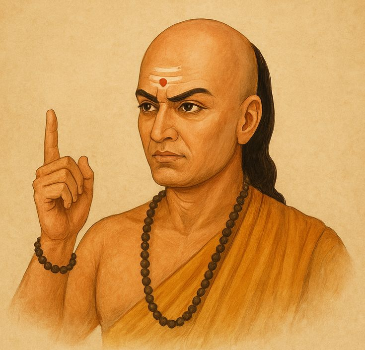
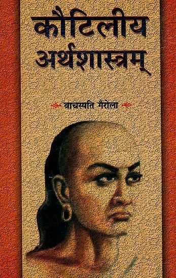
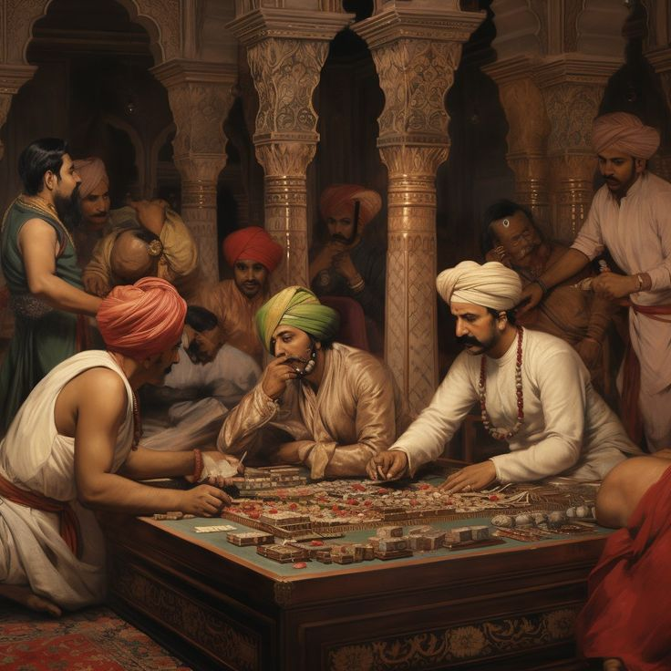

SVG RESOURCE
Kautilya Visual Resource
A visual resource designed to help illustrate Kautilya's four upayas (methods of diplomacy) and their application in political strategy.
Open Full SizeExplore Chanakya, also known as Kautilya, his ideas on statecraft, governance, economics, diplomacy, strategy, and the Arthashastra, along with his traditional connection to Chandragupta Maurya.
Chanakya (c. 4th century BCE), also known as Kautilya or Vishnugupta, was an ancient Indian teacher, strategist, economist, and political thinker who is traditionally associated with the rise of the Mauryan Empire and the founding of Chandragupta Maurya's rule. He is traditionally credited with the Arthashastra, a major treatise on statecraft, economics, administration, diplomacy, warfare, and political strategy. His ideas emphasize practical governance, political intelligence, economic management, and the use of strategy to maintain the stability and security of the state.

Chanakya, also known as Kautilya and traditionally identified with Vishnugupta, is one of the most famous figures in the history of ancient Indian political thought. He is traditionally associated with Chandragupta Maurya and with the political developments surrounding the establishment of the Mauryan Empire.
Chanakya is particularly associated with the Arthashastra, a major Sanskrit treatise dealing with government, political administration, law, economic activity, taxation, diplomacy, military affairs, intelligence, and relations between states. The work presents an unusually detailed examination of how political power and statecraft could be organized and maintained.
The political thought associated with the Arthashastra is notable for its practical and systematic character. It examines the responsibilities of rulers, the organization of government, the protection of territory, the management of resources, and the difficult choices involved in diplomacy and conflict.
Chanakya is therefore remembered not simply as a political adviser, but as a major figure in the history of Indian political thought, economics, and statecraft. His name has become closely associated with political strategy, administrative intelligence, and the realistic analysis of power in both historical and modern discussions.
However, the historical figure behind the traditional accounts remains difficult to reconstruct with complete certainty. Claims about Chanakya's life, the precise relationship between Chanakya, Kautilya, and Vishnugupta, and the date and composition of the surviving Arthashastra require careful historical qualification and remain subjects of scholarly debate.
Chanakya was a major figure associated with ancient Indian political thought and is traditionally connected with Chandragupta Maurya and the rise of the Mauryan Empire. He is remembered as a political adviser, strategist, and thinker whose name became closely associated with questions of government, political power, administration, and statecraft.
He is traditionally associated with the Arthashastra, a major Sanskrit work dealing with government, economics, law, taxation, diplomacy, military affairs, intelligence, and political strategy. The work presents a broad and practical examination of how a ruler and government might organize, protect, and strengthen a political state.
One of the central ideas associated with Kautilyan thought is that a strong state depends on several interconnected elements rather than upon the ruler alone. Officials, economic resources, territory, population, military strength, administration, intelligence, and diplomatic relationships all contribute to the stability and power of the state.
At the same time, the historical details surrounding Chanakya require some caution. Chanakya, Kautilya, and Vishnugupta are traditionally identified with one another, and the Arthashastra is traditionally attributed to Kautilya, but modern scholars continue to debate the precise authorship, date, and compositional history of the surviving text.
In simple terms, Chanakya is important because the tradition associated with his name provides one of the most detailed surviving discussions of ancient Indian statecraft. His continuing significance lies not only in stories about political strategy, but in the systematic examination of how power, wealth, administration, law, security, and diplomacy work together within an organized political system.
The life of Chanakya, also known as Kautilya or Vishnugupta, is difficult to reconstruct with certainty. The surviving accounts were written at different times and preserve a mixture of historical traditions, political literature, and later narratives. As a result, many details of his biography remain uncertain.
Takshashila (Taxila) occupies an important place in traditional accounts of Chanakya's life. Later traditions associate him with the renowned centre of learning in ancient Gandhara, where he is portrayed as a teacher and scholar. These accounts connect Chanakya with education in subjects such as political thought, economics, law, and statecraft, although the precise details of his education and career at Takshashila cannot be established with certainty.
Another important element of the traditional narrative concerns the Nanda court at Pataliputra. Later sources portray Chanakya as having encountered the Nanda ruler and subsequently becoming hostile to the dynasty. The familiar story describes an insult or humiliation at the Nanda court, followed by Chanakya's determination to overthrow Nanda rule. However, the details of this episode belong primarily to later literary traditions rather than securely established contemporary evidence.
The Sanskrit political drama Mudrarakshasa, traditionally attributed to Vishakhadatta, provides another important literary portrayal of Chanakya. The play presents him as the chief strategist behind Chandragupta Maurya's rise and depicts his use of diplomacy, intelligence, alliances, and political strategy during the transition from Nanda to Mauryan rule. Because Mudrarakshasa is a later dramatic work, its narrative should be read as a literary tradition rather than as a straightforward contemporary biography.
Puranic traditions also preserve accounts connecting Chanakya with the destruction of the Nanda dynasty and the establishment of Chandragupta Maurya's rule. These traditions contribute to the enduring image of Chanakya as a political adviser and strategist, although their chronology and historical details vary across sources.
The name Vishnugupta also appears in the Kamandaki Nitisara, an important Sanskrit work on political strategy and statecraft. Its reference is significant because it reflects the continuing association of Vishnugupta with the tradition of political thought connected with the Arthashastra. The identification of Kautilya, Chanakya, and Vishnugupta as the same historical individual, however, has been discussed by scholars and should not be treated as completely free of historical debate.
Taken together, these traditions form the broad biographical picture of Chanakya: a scholar associated with Takshashila, a figure connected with the Nanda court, and the strategist traditionally associated with Chandragupta Maurya and the emergence of the Mauryan state. At the same time, separating historical evidence from later literary and political tradition is essential when reconstructing his life.
Chanakya belongs to the historical world of ancient India, a period in which political authority was divided among numerous kingdoms, republic-like political communities, and regional powers. Competition for territory, resources, trade routes, and political influence shaped the environment in which new forms of larger political organization emerged.
The establishment of the Mauryan Empire transformed this political landscape by bringing an exceptionally large territory under centralized imperial authority. The rise of Mauryan power created new administrative and political challenges involving taxation, military organization, communication, law, diplomacy, and the management of distant regions.
The traditional story places Chanakya within the political transformation associated with Chandragupta Maurya, the founder of the Mauryan dynasty. According to later traditions, Chanakya helped Chandragupta challenge the Nanda rulers and played an important role in the establishment of Mauryan political power.
This historical environment is important for understanding why the thought associated with Chanakya focuses so strongly on the practical problems of government and political power. Questions concerning administration, intelligence, economic resources, diplomacy, military strategy, and the protection of the state occupy a central place in the political tradition associated with his name.
Some details of Chanakya's traditional biography, however, come from later literary sources rather than contemporary historical records. For this reason, the historical Chanakya should be distinguished from the many legendary stories that developed around his name, while recognizing the lasting importance of those traditions in Indian political memory.
One of the most important traditions surrounding Chanakya is his relationship with Chandragupta Maurya. Chandragupta became the founder of the Mauryan dynasty, which eventually developed into one of the largest and most influential political powers in the history of ancient India.
Later literary and historical traditions portray Chanakya as Chandragupta's adviser, strategist, and political mentor. In these accounts, Chanakya recognizes Chandragupta's potential and helps him develop the political and military strength necessary to challenge the existing Nanda dynasty.
The traditional narrative also presents their relationship as an example of the connection between political leadership and strategic intelligence. Chandragupta represents the ruler who exercises political authority, while Chanakya is remembered as the thinker and adviser concerned with planning, administration, diplomacy, and the preservation of power.
The exact historical details of their relationship are difficult to reconstruct with certainty. Much of the familiar story comes from sources composed after the period in which Chandragupta lived, and historians must therefore distinguish between historical evidence and later political or literary traditions.
Nevertheless, the association between Chanakya and Chandragupta became one of the most enduring traditions in Indian political history. Their names continue to be connected with the rise of the Mauryan Empire and with broader ideas about political strategy, leadership, state formation, and the relationship between rulers and their advisers.

The Arthashastra is one of the most important surviving texts in the history of ancient Indian political thought. Its subject is not philosophy in the narrow sense of metaphysical speculation. Instead, it is principally concerned with statecraft, governance, political economy, law, diplomacy, and the administration of political power.
The Sanskrit term artha can refer broadly to material prosperity, wealth, practical advantage, or worldly interests, while shastra refers to a systematic treatise or body of instruction. The Arthashastra therefore deals broadly with the knowledge and techniques considered necessary for managing political and material affairs.
The text discusses a remarkably wide range of subjects, including the duties of rulers, the organization of government departments, taxation, agriculture, trade, law, military affairs, intelligence gathering, foreign policy, and relations between neighboring political powers. Its scope makes it an important source for understanding ancient Indian ideas about the functioning of the state.
The political approach of the Arthashastra is often described as highly practical and analytical. Rather than discussing ideal government only in abstract terms, the text examines the concrete problems faced by rulers, including threats to political stability, conflicts with rivals, economic management, internal disorder, and the difficult use of power.
The surviving text is traditionally attributed to Kautilya, but modern scholarship continues to debate its authorship, date, and compositional history. Some scholars argue that the text developed over time and contains material originating from different periods, making the precise relationship between the historical Chanakya, Kautilya, and the surviving Arthashastra an important subject of scholarly discussion.
Chanakya Niti and the Arthashastra are often associated with Chanakya, Kautilya, or Vishnugupta, but they are different texts with different purposes, structures, and traditions of transmission. The Arthashastra is a systematic treatise concerned primarily with statecraft, administration, economics, diplomacy, law, intelligence, and military strategy. Chanakya Niti, by contrast, is a collection of teachings and maxims concerning practical conduct, personal behavior, relationships, prudence, leadership, and everyday life.
The Arthashastra presents a detailed framework for the functioning of a state. It discusses the responsibilities of rulers, administrative institutions, taxation, economic activity, diplomacy, espionage, warfare, law, and strategies for protecting and expanding political power. Its focus is therefore largely on government and statecraft.
Chanakya Niti is generally encountered as a collection of concise observations or maxims about human behavior and practical wisdom. Its themes include choosing trustworthy people, dealing with friends and enemies, education, wealth, discipline, reputation, leadership, and navigating social relationships. It is consequently much more commonly read as a work of practical wisdom and ethical or social instruction.
The two works are also different in their textual histories. The Arthashastra survives as a substantial Sanskrit treatise and is traditionally associated with Kautilya. The attribution, composition, and development of the text have been subjects of scholarly discussion. Chanakya Niti has likewise circulated through manuscript and textual traditions, and the precise relationship between the text and the historical Chanakya is less straightforward than the popular attribution suggests.
Because both works are popularly connected with Chanakya, their teachings are frequently combined in modern summaries. It is therefore useful to distinguish them when discussing Chanakya's ideas: the Arthashastra is primarily a work of political economy and statecraft, while Chanakya Niti is primarily encountered as a collection of practical maxims about conduct, relationships, and worldly wisdom.
| Theme | Chanakya Niti | Arthashastra |
|---|---|---|
| Type of text | Collection of practical maxims and observations about conduct and worldly wisdom | Systematic treatise on statecraft, administration, economics, law, diplomacy, and strategy |
| Primary focus | Personal conduct, relationships, prudence, education, wealth, and social behavior | Governance, political institutions, economic administration, diplomacy, intelligence, and military affairs |
| Intended perspective | Practical guidance for individuals and social life | Guidance concerning rulers, officials, and the administration of a state |
| Style | Short, memorable statements and maxims | Extended systematic discussion of political and administrative principles |
| Major themes | Character, discipline, friendship, enemies, trust, education, wealth, reputation, and practical wisdom | State administration, taxation, law, diplomacy, espionage, warfare, economics, and political strategy |
| Historical attribution | Traditionally associated with Chanakya, though its textual history and attribution require caution | Traditionally attributed to Kautilya (Chanakya/Vishnugupta), with scholarly debate concerning its composition and textual development |
The Arthashastra is a large Sanskrit treatise traditionally associated with Kautilya (Chanakya). Its surviving text is organized into 15 books (adhikaranas), which are further divided into approximately 150 chapters. The work covers a wide range of subjects connected with government, political economy, administration, law, diplomacy, intelligence, warfare, and the conduct of rulers.
The fifteen books do not form a single narrative. Instead, they function as a systematic body of instruction covering different aspects of statecraft. The earlier books deal extensively with the education and duties of the ruler, administrative organization, law, economic activities, and the management of the kingdom. Later books address diplomacy, relations between states, intelligence operations, military strategy, and methods of dealing with political threats.
The structure of the text became especially important in the modern study of ancient Indian political thought after the manuscript of the Arthashastra was brought to scholarly attention by R. Shamasastry, a Sanskrit scholar and librarian at the Government Oriental Manuscripts Library in Mysore. Shamasastry discovered a manuscript of the text in 1905 and subsequently published the Sanskrit text in 1909. His English translation followed in 1915. These publications played a major role in introducing the Arthashastra to modern scholarship.
Later scholarship produced more critical examinations of the text. One of the most influential modern scholarly editions and studies was produced by R. P. Kangle. His work, published in three parts, included the Sanskrit text and critical apparatus, an English translation, and a study of the text and its interpretation. Kangle's edition, published by the University of Bombay in the 1960s, became an important reference for modern academic study of the Arthashastra.
The modern history of the Arthashastra is therefore closely connected with both its rediscovery and its subsequent critical study: Shamasastry's work brought the manuscript to wider scholarly attention, while Kangle's later scholarship helped establish a more systematic textual and analytical basis for studying the work.
| Aspect | Details |
|---|---|
| Traditional attribution | Kautilya (Chanakya), also associated with the name Vishnugupta |
| Language | Sanskrit |
| Structure | 15 books (adhikaranas) and approximately 150 chapters |
| Main subjects | Statecraft, administration, economics, law, diplomacy, intelligence, warfare, and political strategy |
| Modern manuscript discovery | R. Shamasastry identified a manuscript in 1905 |
| First Sanskrit publication | Edited and published by Shamasastry in 1909 |
| English translation | Shamasastry's English translation was published in 1915 |
| Kangle's scholarship | R. P. Kangle's three-part edition, translation, and study were published in the 1960s and became an influential basis for modern scholarship |
Chanakya's political thought is primarily concerned with the practical functioning and preservation of government. The ruler is expected to protect the state, maintain internal order, administer justice, manage resources, and respond effectively to both internal and external political threats.
Political authority in the Arthashastra is therefore closely connected with security, administration, prosperity, and social order. A stable state requires more than the personal authority of a ruler; it depends upon institutions, capable officials, economic resources, intelligence networks, military power, and diplomatic strategy.
The political thought associated with Kautilya treats the state as a complex organization whose different parts must function together. Weakness in administration, finance, defense, or leadership can threaten the stability of the entire political system, making effective organization essential to the preservation of power.
The ruler nevertheless occupies an important position within this system. Political leadership requires discipline, information, careful judgment, and the ability to select competent advisers and officials. The exercise of power is therefore presented not merely as a privilege but as a demanding responsibility requiring constant attention to the condition of the state.
This practical and systematic approach makes Kautilya particularly important in the history of political thought. Rather than describing politics only in terms of ideal rulers or abstract moral virtues, the Arthashastra examines the concrete problems involved in governing a state and preserving political stability under changing circumstances.
One of the most important ideas associated with the Arthashastra is the Saptanga theory of the state. The state is described through seven interconnected elements rather than being understood simply as a ruler exercising authority over a particular territory.
This theory presents political organization as a system in which leadership, administration, population, defense, financial resources, coercive power, and external alliances all contribute to the strength and survival of the state. No single element is sufficient by itself to guarantee political stability.
The theory illustrates the systemic character of Kautilyan political thought. Political strength cannot be reduced to the personal power of a ruler alone, because a ruler without competent officials, financial resources, territorial stability, or military capacity cannot effectively maintain the state.
The Saptanga model also demonstrates the broad scope of ancient Indian political analysis. It recognizes that domestic administration and external relations are interconnected, while economic resources and military power depend upon the wider stability and organization of political society.
For this reason, the theory remains one of the most frequently discussed concepts associated with Kautilya's political thought. It provides a framework for understanding the state as an interconnected political structure whose different components must be maintained and coordinated.
The Arthashastra gives considerable attention to the administration of the state. Government requires trained officials, organized institutions, financial resources, legal procedures, reliable information, and practical mechanisms for maintaining public order across the territory under its authority.
The ruler's responsibilities include protecting the state and maintaining its prosperity. Administration is therefore presented as an active and continuous responsibility rather than simply the exercise of personal authority or the enjoyment of political status.
Competent officials play an essential role within this system. The effective functioning of government depends upon people capable of carrying out administrative responsibilities, managing resources, enforcing decisions, and providing the ruler with accurate information about conditions within the state.
Economic management is also closely connected with governance. The state requires sufficient financial resources to maintain institutions, support defense, undertake public responsibilities, and respond to changing political circumstances. Questions concerning taxation and revenue therefore occupy an important place in the wider administrative framework.
This emphasis on administration is one reason the Arthashastra is valuable to historians studying ancient Indian political institutions. The text discusses subjects ranging from taxation and economic management to law enforcement, intelligence, diplomacy, and the practical organization of political authority.
Economic resources occupy an important place in Kautilyan political thought. A functioning state requires sufficient revenue to maintain administration, defense, infrastructure, public institutions, and other activities necessary for political stability and security.
The Arthashastra therefore treats economic management as a major responsibility of government rather than as a matter entirely separate from politics. The strength of the treasury affects the state's ability to govern, respond to crises, and pursue its broader political objectives.
The text discusses a wide range of economic subjects, including agriculture, trade, taxation, mining, forests, markets, labor, and state-controlled economic activities. This breadth demonstrates the close relationship between economic organization and political power in the Kautilyan conception of the state.
Taxation was particularly important because government could not function without reliable sources of revenue. At the same time, the management of wealth required supervision and administration in order to reduce corruption, protect resources, and maintain the financial strength of the kingdom.
Economic prosperity was therefore closely connected with political stability. For Kautilya, a state capable of managing resources, supporting productive activity, and maintaining a strong treasury was better prepared to protect its territory and sustain political power.
Foreign policy is a major subject of the Arthashastra. Kautilya examines relationships between neighboring states and considers how rulers should respond to allies, rivals, enemies, and constantly changing political circumstances.
His approach to diplomacy is strongly practical and strategic. A ruler must consider the relative strength, interests, resources, and intentions of other political powers rather than assuming that permanent friendship or permanent hostility exists between states.
One of the best-known concepts associated with Kautilya is the mandala theory, which provides a framework for understanding interstate politics through a network of neighboring powers whose interests may conflict, overlap, or temporarily align.
The Arthashastra considers several possible approaches to foreign relations, including alliances, negotiation, neutrality, preparation for conflict, and military action. The appropriate policy depends upon circumstances and the strategic position of the state.
This emphasis on calculation makes Kautilyan diplomacy an important subject in the history of political thought. Foreign policy is not presented as the simple application of a single moral or diplomatic rule, but as the careful assessment of changing political realities.
The Mandala theory is one of the most discussed aspects of Kautilyan political thought and foreign policy. It presents interstate relations as a strategic environment in which different rulers possess interests that may bring them into cooperation or conflict.
The theory is often associated with the idea that neighboring powers can become natural rivals because they compete for territory, influence, security, or political advantage. States located beyond an immediate rival may, under certain circumstances, become useful partners or allies.
However, the mandala should not be reduced to the simplistic claim that every neighboring state must automatically be treated as an enemy. It is better understood as a framework for analyzing political relationships, strategic interests, alliances, and rivalries within a changing international environment.
The position of each state depends upon circumstances rather than geography alone. Differences in military strength, economic resources, political ambitions, internal stability, and existing alliances can all influence the decisions available to a ruler.
The mandala theory therefore demonstrates Kautilya's emphasis on political calculation and strategic awareness. Foreign policy should respond to actual conditions and changing relationships rather than relying upon a single permanent diplomatic principle for every situation.

Military power is an important part of Kautilyan statecraft. The Arthashastra discusses armies, fortifications, military organization, strategic planning, and the circumstances under which a ruler might use force to protect or advance the interests of the state.
A strong military was closely connected with the security and independence of the kingdom. The ability to defend territory, respond to external threats, and maintain internal stability depended partly upon disciplined forces, adequate resources, and effective leadership.
However, Kautilyan political thought does not treat warfare as the only instrument of foreign policy. Diplomacy, alliances, negotiation, intelligence, strategic positioning, and political calculation are also presented as important tools available to a ruler.
The decision to use military force should therefore be understood within a broader strategic framework. A ruler must consider the relative strength of different powers, available resources, possible alliances, and the likely consequences of military action before entering into conflict.
The broader principle is that political strategy must respond to circumstances rather than follow a single fixed formula. Military power is important, but for Kautilya it forms only one part of the larger system required for protecting and maintaining the state.
The Arthashastra gives substantial attention to intelligence gathering. Information about political conditions, government officials, rivals, public activity, and potential threats is treated as an important resource for effective administration and political decision-making.
The text describes different types of informants and intelligence activities that could provide rulers with information about conditions both within and beyond their territories. These discussions reflect the importance placed on knowledge in the exercise of political power.
Intelligence was not concerned exclusively with foreign enemies. Information could also help a ruler evaluate the conduct of officials, identify corruption, understand internal political tensions, and recognize conditions that might threaten the stability of the state.
This emphasis reflects a broader principle in Kautilyan statecraft: effective political action depends upon understanding actual circumstances rather than governing solely through assumptions or incomplete information. Knowledge therefore becomes closely connected with administration, security, diplomacy, and political strategy.
These passages are among the reasons Kautilya is frequently discussed in modern studies of political strategy. They should nevertheless be understood within the historical context of ancient Indian statecraft rather than being treated simply as a modern intelligence or security manual.
Law and justice are major subjects in the Arthashastra. The text addresses legal disputes, property, contracts, inheritance, offenses, penalties, and the organization of judicial administration, demonstrating the importance of legal order within the wider structure of government.
Kautilyan political thought also emphasizes danda, commonly associated with coercive authority or punishment. The enforcement of law is presented as an important function of government because unchecked disorder and wrongdoing can threaten social and political stability.
Punishment, however, belongs within a broader system of administration rather than being understood simply as arbitrary violence. The maintenance of order requires procedures, officials, investigation, judgment, and the capacity of the state to enforce its decisions.
The ruler therefore has an important responsibility for ensuring that justice is administered effectively. Legal institutions help organize relationships between individuals and the state while also providing mechanisms for addressing disputes and violations of established rules.
Kautilya's discussion of law demonstrates that political power is not limited to diplomacy and warfare. A stable state also depends upon internal institutions capable of maintaining order, resolving disputes, protecting administration, and enforcing the authority of government.
Kautilyan political thought is often described as realist because it pays close attention to power, security, political interests, deception, conflict, and the practical behavior of rulers operating within a competitive political environment.
The Arthashastra does not assume that political life can always be governed through ideal intentions alone. It examines the difficult problems faced by rulers, including external threats, rival states, internal disorder, economic pressures, and struggles for political advantage.
This practical approach does not mean that the Arthashastra simply rejects morality or responsibility. Its political framework also recognizes the duties of the ruler and the importance of order, prosperity, security, and the welfare of the realm.
The relationship between ethics and political necessity is therefore more complex than the image of Chanakya as merely a ruthless strategist. Political decisions may involve difficult calculations, but government is also judged by its ability to maintain a stable and functioning social and political order.
It is consequently more accurate to study Kautilya as a thinker concerned with the relationship between political power, practical necessity, social order, and governmental responsibility. Reducing his thought to a single label overlooks the broader and more complex political philosophy presented in the Arthashastra.
A strong state, in Kautilyan political thought, requires far more than a powerful monarch. Political institutions, territory, population, financial resources, defenses, military power, capable officials, and diplomatic relationships all contribute to the overall strength and stability of the kingdom.
This systemic understanding is particularly important because it connects political authority with economic and administrative capacity. A ruler cannot maintain power indefinitely without the institutions, personnel, resources, and organizational structures necessary to support the everyday functioning of government.
The different elements of the state are closely interconnected. A weak treasury can limit military capability, ineffective officials can damage administration, and internal instability can weaken the state's ability to respond successfully to external political or military threats.
Kautilyan political thought therefore emphasizes preparation and organization. Political strength depends partly upon a state's ability to manage its resources, maintain institutions, protect its territory, and adapt to changing circumstances both within and beyond its borders.
The result is a highly practical theory of political organization in which the health of the state depends upon several interconnected elements functioning effectively. Political power is consequently understood not simply as personal authority, but as the capacity of a larger system to maintain security, order, and stability.
The ruler occupies a central position in the political system described by the Arthashastra. The king is expected to protect the realm, maintain order, administer justice, manage resources, and respond effectively to both internal difficulties and external threats.
Kautilyan thought therefore places significant demands on the ruler. Political leadership is not presented merely as a privilege or symbol of status; it is also an administrative responsibility requiring discipline, intelligence, careful judgment, and sustained attention to the condition of the state.
The king must rely upon ministers, officials, and other institutions, but remains responsible for the broader direction of government. Effective rule requires the ability to evaluate information, supervise administration, manage political relationships, and make decisions according to changing circumstances.
The welfare and prosperity of the realm are closely connected with effective government. A ruler who neglects administration, allows resources to be mismanaged, or fails to protect the population can weaken the political foundations upon which the stability of the state depends.
For this reason, the competence and discipline of the ruler form an important part of Kautilyan political thought. The king's personal conduct cannot be completely separated from the condition of the kingdom, because effective leadership influences administration, security, prosperity, and the maintenance of political order.
Chanakya is best understood through the political and administrative ideas associated with the Arthashastra. His thought does not form a philosophical system concerned primarily with metaphysics, but presents a detailed analysis of power, government, security, economic management, law, and the practical problems of statecraft.
Several themes connect these different areas of Kautilyan thought. Government requires effective institutions, reliable information, economic resources, legal authority, and the ability to respond strategically to both internal problems and changing relationships between different political powers.
Government requires organization, capable officials, financial resources, law enforcement, defense, and strategic planning. The effective administration of these different areas is essential because political authority cannot function successfully through the ruler's personal power alone.
Political authority must be supported by institutions and resources capable of maintaining order and protecting the state. Military strength, defensive infrastructure, intelligence, and effective administration all contribute to the security and stability of political power.
Revenue, agriculture, trade, taxation, and the management of resources are essential to the functioning of government. A strong treasury allows the state to support administration, defense, infrastructure, and other activities necessary for maintaining political stability.
Relations between states should be evaluated according to political circumstances, strategic interests, alliances, and relative power. Kautilyan diplomacy emphasizes careful calculation rather than the assumption that friendship, hostility, or political relationships remain permanently fixed.
Information gathering is treated as an important instrument of political administration and security, while law and judicial institutions help maintain social order. Together, intelligence, justice, and enforcement provide the state with mechanisms for understanding conditions and responding to political instability.
The Arthashastra covers a remarkably broad range of subjects connected with political administration and statecraft. Its discussions include the education and conduct of rulers, the selection of ministers and officials, economic administration, taxation, law, diplomacy, military affairs, intelligence, fortifications, and relations between neighboring political powers.
One of the central concerns of the text is the practical organization of government. It examines how political authority can be supported through effective institutions, reliable officials, financial resources, legal administration, and systems capable of maintaining security and order throughout the territory controlled by the state.
Economic questions also occupy an important place in the Arthashastra. Agriculture, trade, markets, taxation, natural resources, labor, and the management of the treasury are treated as matters closely connected with political stability, because a state requires substantial resources to maintain administration and defense.
The text also gives considerable attention to relations between states. Diplomacy, alliances, negotiations, military action, strategic planning, and intelligence gathering are examined as different instruments available to a ruler. Political decisions are generally presented as depending upon circumstances, interests, relative strength, and the security of the state.
This breadth is one of the Arthashastra's greatest historical strengths. It provides evidence for a sophisticated tradition of thinking about government and political power in ancient India. Modern readers, however, should avoid treating every recommendation in the text as a universal principle, since the work belongs to a particular historical and intellectual environment.
The Arthashastra is traditionally attributed to Kautilya, a figure commonly identified with Chanakya and Vishnugupta. This traditional attribution has become deeply established in Indian intellectual history, and Chanakya is consequently remembered as the political thinker most closely associated with the work and its teachings on statecraft.
The relationship between the names Chanakya, Kautilya, and Vishnugupta, however, is historically complex. Traditional accounts often treat them as referring to the same individual, but the surviving historical evidence does not allow every aspect of this identification to be established with complete certainty.
Modern scholarship has also raised questions about whether the surviving Arthashastra was written entirely by one historical individual. Scholars have proposed different theories concerning its composition, including the possibility that earlier materials and traditions were collected, revised, or incorporated into the work over time.
These debates do not remove the importance of the traditional association between Kautilya and the text. Rather, they show the difficulty of reconstructing the history of ancient works whose original manuscripts, authors, and stages of transmission cannot always be identified with complete precision.
Therefore, the safest historical description is that the Arthashastra is traditionally attributed to Kautilya, who is commonly identified with Chanakya, while its precise authorship and compositional history remain subjects of scholarly debate. This distinction allows both the traditional association and the uncertainties of modern historical research to be recognized.
The date of the Arthashastra is disputed and remains an important question in the study of ancient Indian political thought. Traditional accounts connect Kautilya with the Mauryan period, particularly the rise of Chandragupta Maurya during the late fourth century BCE and the political transformation that led to the establishment of the Mauryan Empire.
If Kautilya and Chanakya are understood as the same historical individual, this traditional association places him within the political world of early Mauryan India. However, the date of the historical figure traditionally associated with the text is not necessarily identical to the date at which the surviving version of the Arthashastra reached its final form.
Modern scholars have proposed different dates and compositional histories for the surviving work. Some argue that the text contains material from earlier traditions of political and administrative thought, while other parts may reflect later periods of composition, compilation, revision, or editorial development.
This possibility is important because ancient texts were often transmitted and preserved across long periods of time. A work associated with a famous historical thinker could incorporate older traditions, later additions, or material produced by more than one author before reaching the form known to modern readers.
Because of these debates, the safest historical description is that the Arthashastra preserves a major ancient Indian tradition of statecraft and political thought. Its traditional connection with the Mauryan period remains highly significant, while the precise date and stages of composition of the surviving text continue to be matters of scholarly discussion.
Chanakya presents an important historical problem because later traditions provide a much richer biography than the surviving early evidence allows us to verify with certainty. Much of the popular image of Chanakya comes from literary traditions and historical narratives composed or preserved long after the political events with which he is traditionally associated.
For this reason, historians must distinguish between traditional associations and details that can be established with greater historical confidence. The existence of a powerful tradition connecting Chanakya with Mauryan political history is itself historically significant, even when individual stories about his life cannot be independently verified.
Another difficulty concerns the relationship between the names Chanakya, Kautilya, and Vishnugupta. Traditional accounts commonly identify these names with the same individual, but questions about their precise historical relationship remain part of scholarly discussion concerning the authorship and transmission of the Arthashastra.
These traditional associations have shaped Chanakya's enduring place in Indian intellectual and political history. They explain why he is remembered not only as a historical or legendary adviser, but also as a major figure connected with ancient Indian theories of government, political strategy, administration, diplomacy, and statecraft.
Therefore, the most careful approach is neither to dismiss Chanakya as entirely legendary nor to treat every traditional story as established historical fact. His importance is best understood by recognizing both the powerful historical tradition surrounding his name and the genuine uncertainties that remain concerning his life and the history of the Arthashastra.
Chanakya is important because the intellectual tradition associated with his name represents one of the most systematic and detailed bodies of political thought to survive from ancient India. The Arthashastra does not examine government only as an abstract moral ideal, but investigates the practical institutions and resources required to establish, protect, and administer political power.
The Arthashastra addresses political institutions, administration, economics, taxation, law, diplomacy, military affairs, intelligence, and relations between states in considerable detail. This extraordinary range makes the work valuable not only for the history of Indian philosophy but also for the study of political theory, economics, administration, and the history of ancient South Asian states.
One of the most significant features of Kautilyan political thought is its systemic understanding of the state. Political strength does not depend upon the ruler alone, but also upon ministers, territory, population, financial resources, military capacity, institutions, intelligence, and diplomatic relationships with other political powers.
Chanakya's importance is therefore not limited to the popular image of him as a clever or ruthless strategist. His broader significance lies in the systematic examination of how political authority, economic resources, administration, security, law, and diplomacy interact within the larger structure of an organized state.
For this reason, Chanakya continues to be studied as an important figure in the history of political thought. Whether particular ideas are attributed directly to the historical Chanakya or to the wider tradition represented by the Arthashastra, the work remains a major source for understanding ancient Indian ideas about power, governance, strategy, and the practical responsibilities of political leadership.
Chanakya continues to attract attention from historians, political theorists, economists, and students of international relations because of the remarkably broad political questions discussed in the Arthashastra. Its treatment of government, economic resources, diplomacy, intelligence, military power, and administration gives the work continuing relevance to discussions about the organization and security of political states.
Modern scholars and political commentators have often examined Kautilyan thought in relation to contemporary questions of strategy and international relations. Ideas associated with interstate competition, alliances, political interests, and the relative strength of neighboring powers have made the Arthashastra particularly interesting to those studying foreign policy and strategic decision-making.
Modern comparisons sometimes describe Kautilya as an ancient equivalent of thinkers such as Machiavelli. Such comparisons can be useful for identifying certain similarities in their attention to political power, strategy, and the practical difficulties of government, but they should not erase the very different historical, cultural, and intellectual contexts in which the two traditions developed.We can still see debates over Chanakya vs Machiavelli still in the modern world, as both thinkers have been studied for their insights into political strategy and leadership.
Chanakya's ideas have also received renewed attention in discussions of political economy and public administration. The close relationship between economic resources, taxation, administration, security, and political stability in the Arthashastra demonstrates that political power was understood as depending upon more than military strength or the authority of an individual ruler.
The most useful modern approach is therefore to study Kautilyan political thought on its own historical terms while recognizing its relevance to broader discussions of governance, strategy, political economy, and international relations. This approach allows the historical importance of the Arthashastra to be understood without simply treating it as a direct blueprint for modern politics.
Kautilya, Niccolò Machiavelli, and Han Feizi are frequently compared because their writings examine political power, statecraft, political order, and the practical problems faced by rulers. However, they belonged to very different historical and intellectual contexts. Kautilya's Arthashastra, Machiavelli's The Prince and other political writings, and Han Feizi's writings on governance should therefore be compared for their themes and approaches rather than treated as equivalent works.
Kautilya's political thought places considerable emphasis on the organization and security of the state. The Arthashastra discusses administration, taxation, law, diplomacy, intelligence, warfare, economics, and strategies for dealing with rival states. The ruler's ability to preserve the stability and strength of the state is a central concern.
Niccolò Machiavelli examined political leadership and the acquisition, preservation, and use of political power in the context of Renaissance Italy. In The Prince, he discusses the conduct of rulers, political necessity, military power, reputation, and the difficulties of maintaining authority. His political writing is often associated with an emphasis on practical political circumstances rather than relying exclusively on idealized models of rulership.
Han Feizi was a major thinker associated with the Chinese Legalist tradition during the Warring States period. His political thought emphasizes strong institutions, clearly defined laws, administrative techniques, and the ruler's ability to maintain authority over officials and subjects. His approach differs from Kautilya's and Machiavelli's because it developed within a distinct Chinese intellectual and political context.
| Theme | Kautilya | Machiavelli | Han Feizi |
|---|---|---|---|
| Historical context | Ancient India; traditionally associated with the Mauryan period | Renaissance Italy; particularly the political conflicts of the Italian states | Warring States period in ancient China |
| Major political text | Arthashastra | The Prince and other political writings | Han Feizi |
| Central concern | Effective governance, state security, administration, and expansion of political power | Political leadership, maintaining authority, and responding to changing political circumstances | Maintaining political order through law, administrative methods, and centralized authority |
| Role of the ruler | Expected to govern effectively while protecting the prosperity, security, and stability of the state | Must understand political realities and act strategically to preserve power and political order | Exercises centralized authority through laws and administrative institutions |
| Law and institutions | Law and administration form important parts of organized government | Political institutions are considered in relation to the practical preservation of political authority | Clearly defined laws and administrative mechanisms are central to governance |
| Diplomacy and strategy | Extensive treatment of alliances, diplomacy, intelligence, and relations between states | Emphasizes strategic judgment, alliances, military organization, and political calculation | Primarily concerned with internal political control and the institutional mechanisms of government |
| Military power | Detailed discussion of armies, warfare, fortifications, and military strategy | Strong emphasis on military organization and the relationship between armed force and political security | Military strength is relevant to state power but receives less systematic treatment than law, administration, and political control |
| Approach to political realism | Focuses extensively on practical methods of governing and protecting the state | Examines political action in relation to concrete circumstances and the preservation of political authority | Emphasizes institutional mechanisms, incentives, law, and the practical control of government |
The comparison shows why these thinkers are often discussed together while also highlighting their differences. Kautilya's Arthashastra is unusually broad in its treatment of administration, economics, diplomacy, intelligence, and warfare; Machiavelli focuses heavily on political leadership and the problems of maintaining power; and Han Feizi emphasizes law, administrative techniques, and centralized political authority. Their similarities are therefore best understood as recurring questions about governance and power rather than evidence that they developed the same political philosophy.
“In the happiness of his subjects lies his happiness; in their welfare, his welfare.”
Explore these supplementary resources for studying Chanakya's philosophy, including visual materials and a downloadable study guide.
A visual resource designed to help illustrate Kautilya's four upayas (methods of diplomacy) and their application in political strategy.
Open Full SizeA visual reference providing additional context for understanding Kautilya's philosophical concepts.
Open Full SizeA visual aid offering another way to explore a major theme or concept associated with Kautilya.
Open Full SizeUse this PDF as a supplementary study resource for exploring Kautilya's life, works, concepts, and philosophical ideas.
The information on this page draws primarily on scholarly editions and translations of Kautilya's Arthashastra, together with academic studies of ancient Indian political thought, governance, diplomacy, and statecraft. These sources are provided so readers can verify the historical, bibliographical, and political ideas discussed throughout the article.
Editorial note: The Arthashastra survives as a Sanskrit text whose dating, composition, and relationship to the historical Kautilya (Chanakya) have been subjects of scholarly discussion. This page therefore distinguishes between information derived directly from the text and later historical interpretations of Kautilya and his political thought. Publication dates above refer to the editions or works cited rather than to the date of the original composition of the Arthashastra.
Chanakya was a famous figure in ancient Indian political thought, traditionally associated with Kautilya and Vishnugupta. He is also traditionally connected with Chandragupta Maurya and the rise of the Mauryan Empire.
Chanakya is traditionally associated with the names Kautilya and Vishnugupta. The exact historical relationship between these names and individuals has been discussed by scholars.
Chanakya is famous for his association with the Arthashastra, ancient Indian statecraft, political strategy, governance, diplomacy, economics, and the traditional story of his role in the rise of Chandragupta Maurya.
The Arthashastra is a Sanskrit treatise concerned with government, administration, political economy, law, diplomacy, military affairs, intelligence, and interstate relations. It is traditionally attributed to Kautilya.
The political tradition associated with Chanakya emphasizes effective government, state security, economic resources, administration, diplomacy, intelligence, law, and strategic decision-making.
Chanakya's political thought is primarily concerned with the practical organization and preservation of political power. It examines governance, administration, economics, diplomacy, military strategy, law, and the security of the state.
The Saptanga theory describes the state through seven interconnected elements: the ruler, ministers and officials, territory and population, fortifications, treasury, coercive or military power, and allies.
The Mandala theory is a framework for understanding relations between states. It emphasizes strategic interests, neighboring powers, alliances, rivalries, and changing political circumstances.
Later traditions portray Chanakya as an adviser and political mentor of Chandragupta Maurya. This association is an important part of Chanakya's traditional biography, although the precise historical details are difficult to establish.
The Arthashastra is traditionally attributed to Kautilya, who is commonly identified with Chanakya. Modern scholarship debates the text's authorship, dating, and compositional history.
Chanakya can reasonably be studied as a major thinker in the history of Indian political thought. His surviving intellectual tradition is primarily concerned with statecraft and political administration rather than metaphysics or epistemology.
Chanakya remains important because the political tradition associated with him provides an extensive historical discussion of government, political strategy, economics, diplomacy, law, administration, and state security.
Explore each major topic in its own detailed guide.
Chanakya remains one of the most influential names associated with ancient Indian political thought. Through the tradition surrounding Kautilya and the Arthashastra, he is connected with a detailed examination of government, political power, economic resources, diplomacy, law, military strategy, and state security.
His historical image must be approached carefully. The traditional biography of Chanakya contains stories whose historical accuracy cannot always be established, while the authorship and dating of the surviving Arthashastra remain subjects of scholarly debate.
Even with these qualifications, the Kautilyan tradition remains exceptionally important for understanding the history of political thought in ancient India. It offers a sophisticated example of how questions of power, governance, economics, diplomacy, and social order were analyzed in the Indian intellectual tradition.
Explore Great Philosophers